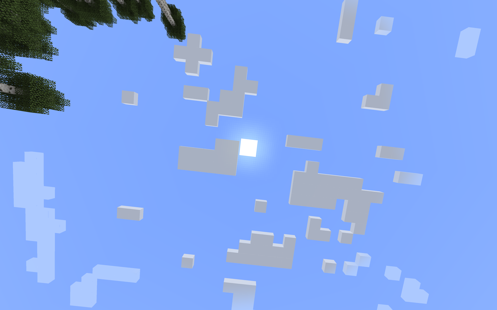
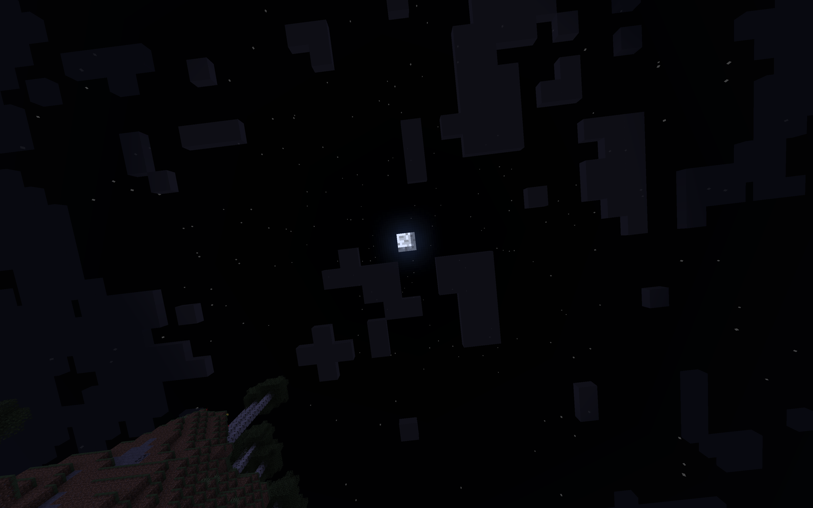

Our final project involved writing our own shaders in Minecraft in order to introduce different graphical effects that the base game lacks. We implemented shadow mapping, bloom, screen space reflections, rippling water and swaying leaves, and atmospheric lighting.
In this section, we implemented atmospheric lighting. In base minecraft, the sun and the moon are merely textures placed in a monocolor sky. As such, they look like they have little to no illumination:
|

|

|
However, in reality, the atmosphere enhances ambient lighting by scattering light from the sun or moon. For visual effect, we can achieve this by treating the sun or moon as an illuminating object in the sky, and then incorporating their radiance into nearby sky fragments in the fragment shader step with some sort of radiance falloff rule.
Minecraft does not render any physical sun, moon, or sky blocks. Instead, these entities are represented as coordinates in view space, and thus act as normalized vectors from your viewing position to the angular position where the sun or specific fragment of sky is. We use this information to simulate a “distance to the sun/moon” metric by projecting the view vector of the sky fragment onto the sun/moon vector, where the shorter the projection is, the farther away the sky fragment is. We then used this distance metric to determine how much light and color we should add from the sun/moon to the relevant sky fragments. One thing to note from lecture is that we learned that irradiance falloff follows the inverse square law in the real world, but sometimes it has to be changed for visual effect. This idea definitely applied here, as we used distance’s 10th power as the relation in order to lower the sky illumination to a satisfactory level.
Shown below are pictures of sun and the moon with atmospheric lighting incorporated: